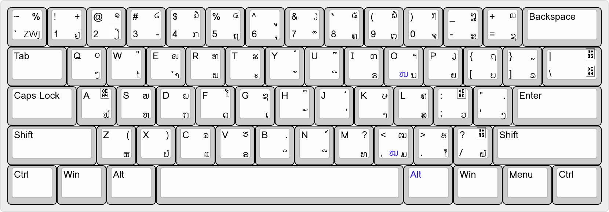

Thai Noi/Lao Buhan Keyboard
This is Thai Noi or Lao Buhan keyboard layout based on Thai Kedmanee.
Text Encoding
The keyboard assumes Thai Noi text to be encoded using Lao Unicode (U+0E80 - U+0EFF) with Pali characters included, plus additional extensions:
- U+0EBE (currently unassigned Unicode) as SARA OY
- U+200D ZERO WIDTH JOINER (ZWJ) as conjunct joiner, that is:
- ຂ + ZWJ + ນ → ຂນ
- ຂ + ZWJ + ມ → ຂມ
- ຄ + ZWJ + ນ → ຄນ
- ຄ + ZWJ + ມ → ຄມ
- ຖ + ZWJ + ນ → ຖນ
- ຖ + ZWJ + ລ → ຖລ
- ສ + ZWJ + ນ → ສນ
- ສ + ZWJ + ມ → ສມ
For HO NO (ໜ) and HO MO (ໝ) which already have Unicode code points, there are two ways to input them: using RightAlt (RightAlt+NO and RightAlt+MO respectively) and using ZWJ above. Both methods bring the same result: the single conjunct character.
- U+0EBA LAO SIGN PALI VIRAMA for marking the following consonant as subjoin form borrowed from Tham script, for example:
- U+0EBA + ສ → ຺ສ
- U+0EBA + ມ → ຺ມ
Note that glyph availability depends on the font being used.
Key Assignments
Lao characters that have Thai correspondents are assigned to the same key as the corresponding Thai characters. Then, characters without Thai correspondents are assigned to the keys for Thai characters with close shapes or functions as follows:
- MAI KONG ( ົ) is assigned to TIS 820-2538/Thai Ketmanee MAITAIKHU ( ็) key (QWERTY: Shift+H), due to their close function in syllables.
- SEMIVOWEL YO ( ຽ) is assigned to TIS 820-2538/Thai Ketmanee YO YING (ญ) key (QWERTY: Shift+P), so it becomes shifted ຍ.
- SARA OY ( ) is assigned to TIS 820-2538/Thai Ketmanee slash (/) key (QWERTY: 2), for their similar shapes.
- YO YA (ຢ) is assigned to TIS 820-2538 BAHT (฿), Thai Ketmanee LAKKHANGYAO (ๅ) key (QWERTY: 1), so it stays close to SARA OY.
- SUBJOIN LO ( ຼ) is assigned to TIS 820-2538/Thai Ketmanee comma (,) key (QWERTY: Shift+]), so it becomes shifted ລ.
- ZWJ for joining conjuncts is assigned to TIS 820-2538 FONGMAN (๏), Thai Ketmanee LOW LINE (_) key (QWERTY: `).
The two conjunct characters, HO NO (ໜ) and HO MO (ໝ) can be typed using Right Alt:
- HO NO (ໜ) using Right Alt+ນ,
- HO MO (ໝ) using Right Alt+ມ.
Keyboard Layout
